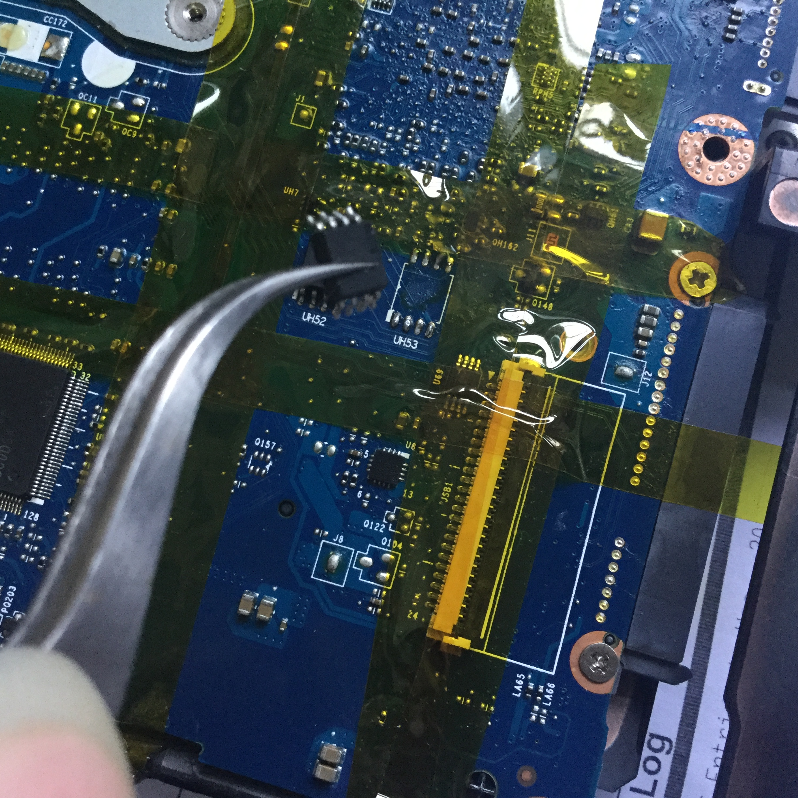

Preface
Yesterday I was messing with a third-party BIOS flash on my laptop. Some options were undocumented, so I tried them manually—and after switching the panel color depth from 18-bit to 24-bit, the machine went down hard.

Black screen. After I typed the BIOS password (judging by sound), it would immediately freeze. I quickly tore it down and unplugged the motherboard battery.

Still no luck. Looks like the only way out was to reprogram the BIOS chips with a programmer today.
Getting Hands-On
Tools: soldering station, other small helper tools, a programmer, and a working computer. Tools and stock images (bundle download)

This is a direct-insert SOP-16 programming socket—no more soldering and desoldering over and over.

Apply heat-resistant tape to avoid damaging surrounding components.

This motherboard has dual BIOS. First, use a hot air gun at 370°C with airflow level 3 to remove the 4MB SOP-8 flash on the right. It took about 8 seconds.

Then place it on the socket and write the stock firmware.

Next, remove the other 2MB flash chip and write its corresponding firmware.


Flash BIOS v2.07 without write protection, which makes it easier to flash a customized firmware later.

Then boot into DOS and re-flash the previously backed-up unlocked BIOS: GPU overclocking enabled, and the Wi‑Fi card whitelist removed.

Flash the EC firmware.

All done!
No more self-inflicted BIOS disasters. This isn’t even the first time I’ve bricked a BIOS… next time I do something stupid, I’ll… (〃｀д´ ) ?
 CC BY-NC-SA 4.0
CC BY-NC-SA 4.0